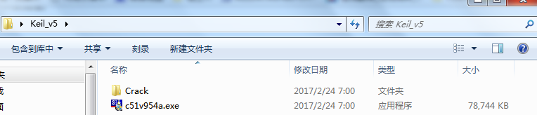

Keil μVision C51是一套51系列兼容单片机C语言集成开发环境，可以完成编辑、编译、连接、调试、仿真等开发流程。
1.1下载keil安装包。
1.2根据需要，下载解压缩软件。
2.1使用解压缩软件，将keil安装包解压缩。
2.2解压缩完成后，文件夹状态截图如下所示：

3.1运行"C51V9xx.exe"文件，启动Keil安装过程。
3.2参考安装过程如下所示：
4.1使用以管理员身份运行Keil应用程序。
4.2将CID(Computer ID)复制到"KEIL_Lic.exe"的相应位置，并生成LID(License ID)。
4.3将LID添加到系统中。
4.4参考许可过程如下所示：